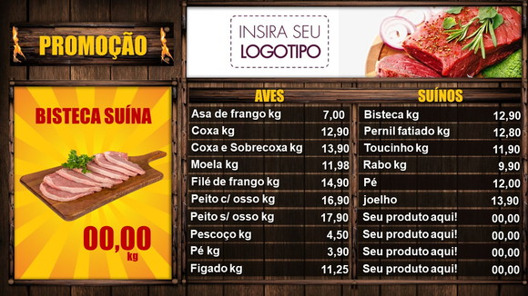

Casa de Carnes Império
2021 ©

Seja bem vindo a Casa de Carnes Império, você aprenderá conteúdos que envolvem o mundo das carnes nobres, tipos de corte, pontos da carne, entre outros.
Tipos de carnes de primeira A carnes de primeira são conhecidas por terem uma textura mais macia e estão localizadas nas regiões menos usadas no corpo dos bois, portanto proporcionam cortes de maior qualidade e com bem menos gordura. Geralmente são usadas para o preparo de churrascos e assados.
Saiba maisEm um mundo gourmetizado como o que vivemos, acaba se tornando cada vez mais fácil encontrar carnes diferentes, de diversos lugares. É claro que uma carne considerada exótica no Brasil pode ser comum em outros países, como a carne de cavalo na Europa ou mesmo a carne de canguru na Austrália.
Saiba maisO aspecto mais importante na hora de se escolher a carne deve ser a saúde. Independe do tipo de carne, é possível manter uma dieta equilibrada com os dois tipos. Tanto as carnes brancas quanto as vermelhas têm aspectos positivos e negativos. Para consumí-las de forma saudável é preciso equilibrio.
Saiba mais Veja nossos produtos1 – Entenda o que é “carne de primeira”, “de segunda” ou “de terceira” Você provavelmente já viu no açougue ou ouviu alguém falar em denominações como “carne de primeira”, “carne de segunda” e “carne de terceira”. Isso tem a ver com a qualidade do sabor da carne? Ou seja: a carne de primeira é melhor que a de segunda? Não, na verdade não é isso.
A divisão entre carnes de primeira, segunda ou terceira tem a ver com o local do boi onde elas estão localizadas. Isso tem influência sim na qualidade da carne, mas apenas na sua maciez e quantidade de gordura. Não significa que uma de primeira é obrigatoriamente melhor do que uma de segunda, especialmente se levarmos em consideração o modo de preparo e a situação em que ela será usada.
Os cortes de primeira são aqueles que estão em partes menos usadas pelo boi. Portanto, são mais macias. Eles são muito usados para churrasco, para fazer bifes ou assados. Alguns exemplos incluem o contrafilé, o filé-mignon, a picanha, alcatra, maminha e o patinho. Já os cortes de segunda são aqueles que ficam em partes mais expostas do boi. Acabam sendo mais populares por serem carnes com mais fibra e mais músculos. São ótimas para cozidos, especialmente na panela de pressão. Exemplos dela são o cupim (que tem bastante gordura e fibras), o acém (o pedaço mais macio da parte dianteira), a paleta (com bastante gordura interior) e o fraldão (bastante fibras e sabor suave).Por fim, o corte de terceira é aquele que leva junto uma camada extra de tecido conjuntivo do boi. Por isso, tem mais gordura e um pouco mais de nervos do que os outros cortes. São também mais baratos no açougue. Um exemplo é o músculo, uma carne que é muito saborosa. A ponta de agulha também é um exemplo e se destaca por ter muitas fibras, sendo um corte mais recomendado para sanduíches.
2 – Saiba qual corte de carne é melhor em cada situação Agora que você já entendeu os diferentes cortes, deve ter percebido que é importante saber escolher o melhor para cada situação. Afinal, nem sempre a carne “de primeira” será a mais recomendada.
Por exemplo, a picanha é um corte muito macio e gorduroso. É, possivelmente, o corte favorito dos brasileiros. No entanto, ela não é muito recomendada para um evento social mais formal, daqueles que você tira o faqueiro de prata do armário. Isso porque ela é gordurosa demais e pode causar alguns inconvenientes nessa situação.Já para um churrasco informal com os amigos, ela é perfeita. As carnes mais fibrosas devem ficar longe da churrasqueira, mas são muito indicadas para quem está de dieta, mas ainda prefere comer carne.
3 – Aprenda como preparar cada corte de carne Cada tipo de corte de carne pede um preparo específico. Isso porque cada maneira de preparar o corte ajuda a realçar suas características positivas. Por exemplo, uma carne com bastante gordura interna deve ser feita assada, mas primeiro selada para evitar perder sua suculência.
Já uma carne com uma capa de gordura externa deve ser feita na grelha, pois a gordura vai derretendo e entra na carne. Um corte mais duro precisa ser feito na panela de pressão para poder realçar seu sabor e por aí vai.
4 – Saiba escolher o corte no mercado Quando você for comprar cortes de carne no supermercado, precisa ficar atento para poder escolher as melhores opções e não ser “enganado” pelo açougueiro. É claro que os profissionais do açougue não são más pessoas, mas é comum que eles recebam instruções para tentar “empurrar” carnes que já não estão no melhor estado para evitar perdas ao supermercado. Em caso de carne bovina, o melhor é comprar uma carne mais vermelha, sem manchas e pontos escuros na sua superfície. Além disso, a sua consistência deve ser firme. O mesmo com a carne suína, que não pode apresentar uma consistência meio amolecida ou pegajosa. Já em relação ao frango, a carne precisa estar bem presa aos ossos, com uma cor meio amarela pálida.
Pronto! Essas quatro dicas de corte de carnes vão deixar o seu churrasco, seu evento social ou mesmo o seu almoço mais simples e saborosos. É verdade que ainda existe muito mais que você pode aprender sobre o assunto, desde combinações de carnes para fazer um bom blend de hambúrguer (a dica é pegar uma carne com mais gordura e outra mais magra) até segredos do tempero ou as diferenças entre as raças de animais.
A Maminha em Tira é um corte feito no final da peça da alcatra, e conserva maciez e boa capa de gordura. Essa carne premium deve ser fatiada na direção das fibras, para que preserve todas suas qualidades e aproveite o melhor de sua textura. Esse corte específico também confere o formato longo da tira, e mantém sua gordura lateral.
O sabor do corte é equilibrado, ou seja, nem acentuado como uma picanha e nem suave como um filé-mignon, além do mais, a tira de maminha tem boa umidade. O preparo mais adequado para essa carne é temperá-la no sal grosso e levá-la à grelha. Mas você também pode experimentar um toque diferente com temperos suaves, que o resultado será excelente.
Das carnes premium, a Bananinha é considerada um subcorte, pois é retirada do contrafilé, corte já consagrado. Essa carne nobre recebe esse nome porque se parece mesmo com o doce homônimo, tanto em formato quanto em tamanho. O destaque da peça fica com sua gordura entremeada, que lubrifica bastante a carne, deixando-a ideal para vários preparos.
A Bananinha é um corte perfeito para churrasco, sendo um ótimo petisco de sabor acentuado e macio, ou pode também ser servida com molho como prato principal. Mais uma receita que traz o melhor em sabor dessa carne premium, é fazê-la na panela de pressão, com bastante tempero. O resultado é uma carne mais suculenta e marcante.
O Prime Rib é uma das carnes premium que devem ter espaço em seu churrasco, para surpreender o paladar da maioria. O corte é conhecido também como costela de primeira, fazendo referência a sua alta qualidade. O Prime Rib é extraído da parte mais macia da costela, com muito marmoreio, sabor acentuado, acompanha osso, tem entre 20 e 30 cm de comprimento e é espesso.
A forma ideal de preparo do Prime Rib é na grelha, sempre começando pela parte do osso, que leva mais tempo para assar. Apenas sal grosso e cerca de 10 minutos de grelha em cada lado são suficientes para preparar esse corte, que deve ser consumido preferencialmente malpassado.
O Blade Roast destaca-se no mundo das carnes premium pelo fato de ser retirado de uma área do dianteiro do boi. A peça fica ao lado do miolo da paleta, é bastante lubrificada, macia, alta e com sabor e cor muito acentuadas.
A gordura do Blade Roast é mais concentrada, o que permite seu preparo de vários modos, sem que a carne seque. O modo mais comum de fazer essa carne é cortá-la em bifes altos e levar à grelha, frigideira ou chapa. Para apreciar o sabor mais rústico dos pedaços, você pode temperar a carne apenas com sal. Já para um toque ainda mais forte, você pode usar temperos caseiros ou molhos prontos.
O Shoulder, também conhecido como Raquete, é mais uma das carnes nobres da parte dianteira do boi, que ganha cada vez mais paladares pela sua alta qualidade. O corte é feito na parte superior da paleta, e apesar de não ter uma capa de gordura lateral, tem fibras curtas e bom grau de marmoreio, que dão mais maciez ao Shoulder.
O corte é alto, sendo apreciado em forma de bifes na grelha ou chapa, e permitem temperos à base de vinho tinto, ervas finas e outros preparos que realçam seu sabor. O Shoulder também pode ser cozido, sem correr o risco de ficar duro, e mantendo o seu sabor característico. Por ser tão macio, o corte já chega a ser colocado em páreo com o filé-mignon nesse quesito, sem ficar para trás.
O Prime Steak é o miolo do acém, retirado próximo ao pescoço do boi, e concentra farta carne entremeada com gordura. O corte também pode ser feito mantendo o osso da costela da parte dianteira, que o deixa ideal para churrascos. Seu corte é estrategicamente feito contra as fibras, para preservar a suculência dos generosos bifes de Prime Steak, e realçar sua maciez.
Esse corte premium apresenta excelente marmoreio, e com isso ganha muito sabor e maciez. O preparo de um Prime Steak pode ser tanto na clássica grelha quanto na chapa, temperado com sal grosso ou temperos ao seu gosto. Feitos ao ponto e no tempo certo, os bifes altos dessa carne ficam bastante irrigados.
Preparar esses cortes premium privilegiando o ponto malpassado levará o sabor e suculência de cada peça, ao ápice. Porém, se você gosta de uma carne mais passada, não se limite a essa regra.
Marinar a carne é sempre uma maneira eficaz de amaciá-la.
Um grande aliado do amaciamento de carnes é a mistura de azeite e vinagre. Basta misturar os dois itens e deixar a carne marinando por pelo menos 2 horas antes de ir para a churrasqueira.
Além de amaciar, essa mistura também deixa a carne com um ótimo tempero!
Outro item que também te ajuda muito a amaciar a carne é o bicarbonato de sódio. Despeje um pouco na peça que irá para a churrasqueira e deixe descansando por aproximadamente 2 horas.
Depois do tempo de descanso lave a carne brevemente em água corrente para tirar o excesso de bicarbonato.
Lembre-se, ao lavar tire todos os alimentos e louças limpas de perto, para que não sejam contaminados com qualquer bactéria da carne. Para entender melhor, leia nosso post sobre cuidados com a lavagem de carnes.
Essa dica vai agradar todos que adoram uma cervejinha para acompanhar o churrasco. Marinar a carne na cerveja por algumas horas antes de prepará-la também amacia e de bônus deixa um sabor incrível. É recomendado utilizar uma lata para cada quilo de carne.
Outa bebida que também pode ser utilizada nessa missão é o vinho tinto.
Seu churrasco ainda está de pé! Já pode confirmar a presença de seus amigos e família. Agora vá colocar as dicas em prática, e amacie suas carnes!
2021 ©